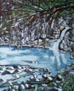

Sentir de poeta...
Sentir de poeta...
 |
A. B. © Alty Gaviota
Del Alba |
¡Nuevo! Mi Alma
Mi Alma
Mi Alma buscó un amor y lo encontró.
He de decir que cuando vagué entre
pena y desconsuelo
no encontraba
luz ni aún del cielo,
contemplaba mis
dias largos y muy tristes;
hasta que
te encontré allá lejos de este mundo.
Pensé que mi pecado no tendría ni
la ilusión de alcanzarte así como el mar
profundo y temeroso desea alcanzar
las nubes; pero sólo le quedó soñar
sin condiciones y ser feliz bajo la bruma.
Hoy te doy mi amor sin más razones,
olvidé todo lo oscuro que me persiguió,
soy nueva criatura en ti mi Dios por siempre
viviré enamorada de ti; ¡Oh Señor!
A.B.V. © Alty Berríos Vázquez Gaviota Del Alba 12-19-2013
Algunos anteriores
 En Mí Estás
En Mí Estás
Pensamientos
Está bordado tu cuerpo a mi silencio,
mis ansias te buscan en la tempestad,
preguntas que no encuentran respuestas,
recuerdos que no se quieren encontrar.
Tus besos abrigan mis pensamientos,
tu suave piel ha navegado en mi piel,
y en la devota verdad de mis adentros,
y en el énfasis que aprieta sentimientos
veo a lo lejos un adiós que no deseo.
Cuántas lágrimas se han desbordado
del hielo...Cuantas gotas han formado
arenillas como desierto... No entiendo;
¿Hasta cuándo los lamentos se ofuscan
y giran con el viento dejando ecos, ecos...?
A.B.V. © alty Gaviota Del Alba Sept 11 2010
Sentimientos
Se dibuja el amor al tocar tu piel,
y la vida que me pertenece vive
y se convierte en una obsesión
que no puedo controlar... Pienso,
entiendo... que con estas ansias
voy desbocada, y mi alma desesperada
intenta ver los dias, las horas de volver
a verte, construyendo miles de sueños
donde se viven fantasias. De aquellos
momentos donde un dia nos sumergimos,
sentimientos profundos que juntos vivimos.
Hemos escrito un libro donde juntos alcanzamos
estrellas; detuvimos el tiempo al fundir nuestros
cuerpos, y aquí, ahora, en la distancia, ésa que nos
separa, se describe la ansiedad llena de locuras.
Página a página escrita de tantos bellos momentos,
ahora se han vuelto figuras llenas de melancolías,
como golondrinas que quieren volar para encontrarse
al fin, en el nido de amor que un día, juntos, construimos.
Queremos viajar con sueños. Pero, cada lágrima es como
una tempestad que azota nuestros rostros y sé que volar
sin sueños es como navegar en una pequeña barca en un
inmenso mar, océano incierto... anhelos perdidos en la
espera de no ver més el tiempo. Juntos olvidaremos todos los
tropiezos... y satisfechos cosnstruiremos un mundo, muy nuestro.
Cuéntame
Eres
Eres amor el verso que me da la musa,
aqui en mi soledad consumes mi pena
con tu sonrisa, Y cuando tu voz me
habla el dolor sale por las ventana
de mi alma, alumbrando mi ser con
la luz de tus dulces ojos; ¡Eres amor!
Eres... Eres amor ese beso que un día
rocío mi boca y le dió vida;Eres...Eres
amor esa energía que extraño cuando la
pena me inunda, Cuando la lluvia me
acaricia y entre susurros como ecos se
escucha en el viento;¡Te amo mi amor!
Eres...Eres como la madrugada en mi ventana,
Como el inmenso cielo lleno de nubes blancas,
Como la luna llena buscando el eclipse del sol
creciente, calidad, ardiente, un beso tierno que
se da en la mañana, Eres... Eres mi amor...¡Eres!
Voy Navegando
Voy navegando por mares inciertos,
tratando de buscar la luz de tus ojos,
ellos me esquivan la mirada,ellos no
quieren ni entienden mi dolorosa alma.
Hoy me debato en medio de una tempestad,
buscando en tus brazos el amor que no tuve
jamás, ya no quiero ahogarme en la soledad,
ya no quiero sufrir más;¿Porque no me dejan
amar? Porque no me dejan una vez ser feliz?
Mi barca se hunde en el mar de los recuerdos,
y yo aqí sin poder amarte siento que muero,
no hay libertad de respirar, no hay libertad
de soñar,pues tu allá y yo acá, ¡Me desespero!
No dejes que me hunda en el ancho mar de mi
silencio, guíame con los suspiros de tus anhelos,
llevame a ese lugar que un día juntos soñamos,
donde las estrellas se juntarán y descansarán.
Guíame por el silencio… Suspira conmigo yo te
lo ruego, acortemos el tiempo, anclemos mi barca
sobre la arena de tu cuerpo… Con libertad vivamos
de nuestros bellos recuerdos,¡No dejes que muera!
¡No dejes que navegue mi barca en este desierto!
Siento...
Siento...con el corazón y el alma,
que llegas suave, sincero y tierno,
haciendo pleno el momento de
sentirnos juntos y llenos en
sutil complemento...Siento.
Siento, que de ti sale sin miedo;
¡Y eso me encanta!
esa mirada que engalana
mis días, mi vida, mis
entrañas... Siento.
Siento que dirás palabras,
llenas de amor y color
a cielo, entregándolas
con tus caricias dejando
en mis ojos un brillo
parecido a la luz.
Siento que me llamarás,
"Amor de sentir audible"
valiente cuando te entregas,
haciendo suspirar mi alma.
Siento que te comentaré,
sin miedo... de trovas en
la lengua, y ahí te regalaré
con dulzura todo mi amor.
--------------------------------------------------
 Ecos (Algunas letras escogidas)
Ecos (Algunas letras escogidas)
Tiembla tu nombre desde mis adentros,
cuando un suspiro mío se siente como ecos,
el viento lo escucha al formarse en remolino,
y parece alegre cuando pasa por el camino.
Un grito se escucha en los confines de la tierra,
enamorados se juntan los cuatro puntos cardinales,
la madre naturaleza entiende el temblor de mis entrañas,
y hace correr la voz con gemidos que alcanzan tu alma.
Las aves hacen piruetas en el aire, los mares hacen
fiestas con los corales, los ríos le dan son al ritmo
de las piedras, la selva le baila a las hojas y palmas,
y la luna y las estrellas dan su magia a la noche bella.
Ecos, ecos se escucha en mi interior...Me Bendice Dios
con el "TE AMO AMOR" que sale de tus dulces labios...
. . .
 Rito al Amor
Rito al Amor
Hoy vuelve a palpitar mi corazón,
Después de estar en su letargo,
Ofreciendo su acertijo, El encanto
de su brillo, la magia de sus adentros.
Al borde del precipicio se balanceaban
sus penas, Vivía ocultando el pasado
Por pena de volver a ser burlado.
Como atalaya vivía buscando desesperado,
Olvidar esos amores que sin lealtad fallaron,
Y de su amor se burlaron; ¡Sueños olvidados!
Rito le hace al amor, sus manos se unen
con clemencia, pidiéndole al infinito
que le traiga a su amor para amarle
Sin condición; ¡Hacerle un bello paraíso!
La distancia es impertinente, las piedras
Se unen en sus tropiezos, las huellas que
fueron borradas, dejaron sus carcajadas.
--------------------
 No me preguntes
No me preguntes
No me preguntes por qué cuando me miras a los ojos
y mis ojos brillan, Un manantial de alegrías buscan
desbordar por mis pupilas, Convertirse en un mar
para naufragar mis penas, Anclarlas en el pasado,
Sumergirlas en los corales, vestirlas de mil colores.
No me preguntes cómo me sumerjo en las penas,
Si sabes que al no tenerte, mi alma hoy se desborda
buscando entre la distancia el recuerdo que me aflora,
Cada instante que juntos con amor nos despojamos,
Vistiendo la esfera en suspiros, cantando al amor vivido.
No me preguntes amor…Sabes que eres mi todo y al salir
de mi interior, voy buscando tu adiós para pintarlo de espera,
Aquí en mi habitación, aquí en mis poemas, yo te digo que te espero
para seguirte amando, beber de tu manantial y respirar de tu aliento.
EL AMOR NO SE APRENDE; ¡NACE, SE SIENTE, SE VIVE! EL AMOR ES COMO UN JARDIN LLENO DE BELLAS ROSAS, HAY MUCHAS HERMOSAS
PARA ADMIRAR Y RESPETAR; ¡PERO SOLO UNA TE TOCA CON SU AROMA NATURAL! DEJANDO EN TI LA HUELLA DEL VERDADERO VERBO.
¡AMOR ÁGAPE DE DIOS!
LOS AMORES APRENDIDOS SON COMO LOS HURACANES QUE AZOTAN LAS COSTAS, DEJANDO MARCAS DE UN MAL RECUERDO.
¿POR QUÉ EL AMOR NO SE APRENDE? PORQUE DIOS NO NOS APRENDIO A AMAR, ÉL NOS AMÓ DESDE MUCHO ANTES.
PORQUE DIOS ES OMNISIENTE, OMNIPRESENTE, OMNIPOTENTE; Y EL AMOR APRENDIDO SIMPLEMENTE ES UN MECANISMO CONSTANTE QUE
EL DIA QUE NO ESTE SIMPLEMENTE ES OLVIDADO.
 Con el Viento
Con el Viento
 Hoy...
Hoy...
Hoy, mientras pensaba en todo lo que ha sucedido
veo cada día la vida más intensa.
La noche no es ya
tan fría como la misma soledad que me abrazaba,
hay una luz en mi camino que aún viéndola en mi
memoria y ensueños cada vez la veo más cerca.
Me abrigo a la esperanza, a esa libertad que me
regalas,
y al mirar el libro de mi vida una página se
hace nueva, sin llantos,sin lamentos,con el tiempo
a mi favor;
¡El que hay que aprovechar al máximo!
Sí; de lo bello, de lo grande, de el mundo que veo
a mis pies y mucho más el instante en que descubrí
tu mirada como una semilla creciendo entre lo cruel
de mi jornada diaria,
entre los espinos de mi pasado,
creciendo con amor en tus altares para darle culto a
mis tempestades,
a mi dolor pasado ungiéndolo con
tus virtudes, tu sonrisa que a diario se ha vuelto mi sueño.
Sintiendo hoy que mucho antes desde antes de la creación
cuando un beso se dió en silencio
desnudó el alma a su tiempo,
y ahí la verdad floreció enseñándonos cómo Dios nos lleva a
favor del viento y de la voluntad de sus propósitos,
con sutileza,
por eso no morderé en silencio más lo que mi corazón siente,
no
aprenderé a callar más las palabras que me dan la razón,
la dicha
y la felicidad que brota de mi interior;
¡Te Amo mi amor... Te Amo!
 Tu
bello Óleo
Tu
bello Óleo
Maravillada, desde mi cielo miro con estusiasmo
tu óleo; y en la ventana de mi alma contemplo
coloridos, te quiero sobre la vereda de tus manos.
¡Ellas se dispersan cubriendo las hojas del tiempo!
Va en diferente dirección como bailando al son del viento,
y en las discrepancias de lo que son,
los puntos cardinales una alfombra multicolores
se dispersa con sutileza tu yo interior, lleno de amor.
Conforman con ella un vestido translucente,
como una estación llena de agasajo.
Es la admiración que me trasmites,
desde tu pecho mi amiga querida...
¡Ese sonido anida en mi pecho al ver tu pintura!
Desnudas las ramas del caudal de árboles al pintarles,
y la luz que abriga el horizonte se siente como abrigo.
Sonidos del viento que deshojan los rincones de un bello amancer;
melodías sonoras emiten una canción.
El otoño aflora con fuerte brisa, energía de luces que
fueron tus vivencias;
Calidas temperaturas, dejan el invierno atrás
y en tu vereda de pintura no sientes ya más soledad.
¡Y desde arriba un ángel te sonríe,
y yo, acá en mi cielo lo siento, mi preciosa amiga!
. . .
 El
Amor se Hizo Poema
El
Amor se Hizo Poema
El amor se hizo poema al tenerte junto a mí...
Volviéndose en fantasías los versos que te escribí.
El amor se hizo poema cuando cerca te sentí...
Poesías y versos formaron,
Sentidos imaginarios para mí.
El amor se hizo poema con esperanzas para mí...
Y un porvenir de sueños con caricias que llenan mi existir.
El amor se hizo poema cuando llegaste a mí...
Todos los versos que escribo son inspirados para ti.
El amor se hizo poema; todo gira alrededor de ti...
Una luz llena de añoranzas,
recuerdos que alumbran mis versos.
Y todo esto por que tengo lo más bello que me diste de ti...
 Alma
De Poeta
Alma
De Poeta
Aquí en este espacio…
Mis poemas y rimas lleva,
dolor, amor y sinsabor…
Y entre la bruma de la noche,
mi musa se hace más intensa.
Como alma de poeta…
voy afligiendo mi pecho,
y al escribir bellos versos…
dibujo un romance y miles:“ te quiero”
Mi mente besan sus labios,
como la luna llena con su opaca luz,
llevando el dorado y el plateado…
en la intensa búsqueda de su amor antaño.
Quisiera dibujar la luna…
Con diamantes y perlas las estrellas;
más no soy poeta de gran lírica…
sólo soy aficionada que busca su alma.
Muchas veces suelo soñar…
Que la luna es bella como el mar,
y entre sus brazos suelo volar…
muriendo de amor por mi aflicción.
Alma de poeta, siento mi corazón latir…
Cada vez que escribo un verso de amor,
cierro mis ojos y me encuentro en su interior…
melodiando su vida y su corazón.
Si mi pensamiento no trae bellos versos…
Y mi corazón angustiado y desanimado,
trae a mi espacio sólo dolor y sinsabor:
Pido que perdonen mi interior,
pues a veces, suele ser terco como vos...
. . . .
 CON
TUS ALAS ROTAS
CON
TUS ALAS ROTAS
Con tus alas rotas, solitaria quedas...
Desolada lloras el amor que habías soñado.
Naufragas en silencio...
Dolor profundo anida en tu pecho...
Al decirte adiós,
un frío helado
te arropa.
Tus anhelos destrozados...
Frío despiadado...
Lágrimas apagan el calor
de sus manos y su adiós
sin piedad ha quedado.
La penumbra cubre hoy tu desnudez...
Su adiós cruel y egoísta arrancó tus alas,
Un mar desierto queda...
Alborotado viento te destroza.
Gritas al cielo...
Absoluta clemencia...
Pides amor, Bálsamo para tus penas.
Con tus alas rotas te vestirás de nuevo...
De rosas, de amor y de esperanza divina.
Pedirás prestado unas nuevas ropas...
Alas florences, mariposas de colores.
Volverás a soñar con ternura y fuego...
De un nuevo amor que te llene toda.
Volverás a soñar...
Volverás a amar...
Dejando pesares atrás, rompiendo heridas,
Volverás a cantar.
Ver reseña curricular y fotografía de Alty